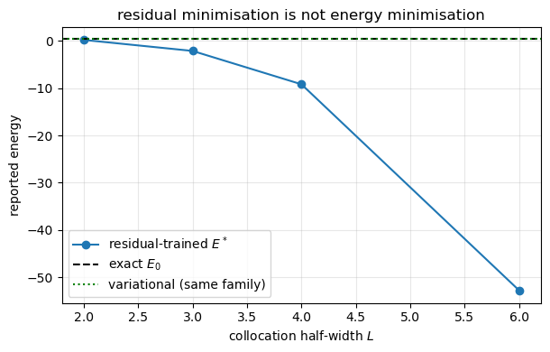
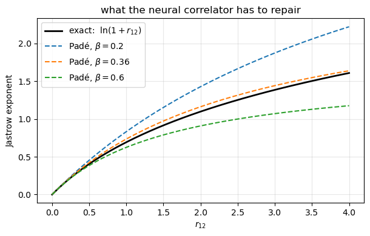
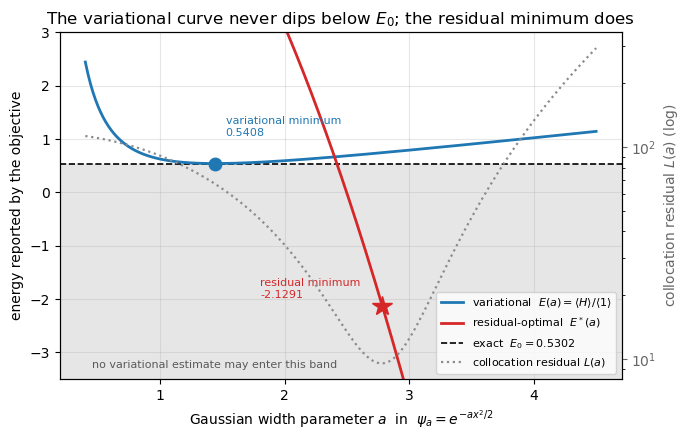
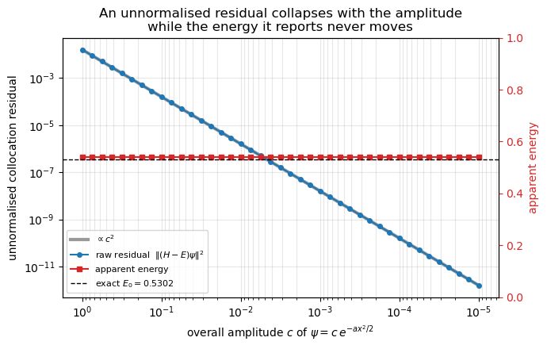
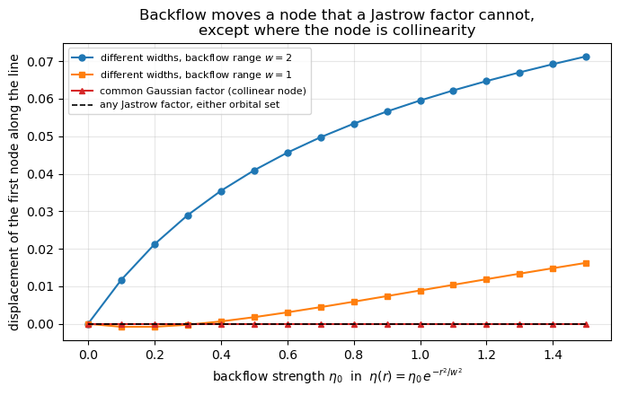

19. Neural quantum states and physics-informed neural networks#
Executable companion to chapter 18.
Chapter 17 ended with a Boltzmann machine that reached 3.082 where the exact answer is 3, and with a diagnosis: no physics in the ansatz, no cusp, and a local-energy variance of three. The two-parameter Padé–Jastrow function of chapter 13 did a hundred and fifty times better. The conclusion was to combine them, and this notebook does that.
Two ideas must be kept apart:
the ansatz — what functional form we allow, and how much known physics (antisymmetry, the cusp, symmetry) is built in exactly rather than learned;
the training objective — what we minimise. Chapters 13–14 minimised the energy, which is variational. A PINN may instead minimise the residual of the Schrödinger equation, which is a different thing, and the difference matters a great deal.
import sys
import sys, os, glob
# the chapter programs live in BookPrograms/chapterNN; put them all on the path
for _d in sorted(glob.glob(os.path.join("..", "BookManybody",
"BookPrograms", "chapter*"))):
if _d not in sys.path:
sys.path.insert(0, _d)
import math
import numpy as np
import matplotlib.pyplot as plt
import pinn
from vmcoptimise import blocking
19.1. 1. Automatic differentiation, done by hand#
A PINN needs second derivatives of a network with respect to its inputs. For layers \(a' = \varphi(Wa+b)\) the forward-mode recursion is
with \(\varphi'=1-t^2\) and \(\varphi''=-2t(1-t^2)\) for \(t=\tanh z\). That is all an AD framework does; writing it out makes the cost visible — each derivative order multiplies the work by the number of inputs.
Note \(\varphi''\) in that formula. ReLU has \(\varphi''=0\) almost everywhere, so it is unusable for any second-order operator, the Laplacian included. Smooth activations are not a matter of taste here.
checks = pinn.check_autodiff()
print(f"network with {checks['n_parameters']} parameters")
print(f"gradient d f / d u_k {checks['gradient']:.2e}")
print(f"Hessian d2 f / d u_k d u_l {checks['hessian']:.2e}")
print(f"parameters d f / d theta {checks['parameters']:.2e}")
print("\n(the Hessian line is limited by the finite difference, not by the")
print(" analytic result)")
network with 205 parameters
gradient d f / d u_k 5.96e-12
Hessian d2 f / d u_k d u_l 3.98e-08
parameters d f / d theta 3.31e-11
(the Hessian line is limited by the finite difference, not by the
analytic result)
19.2. 2. Does a PINN respect the variational principle?#
For any admissible trial state,
which is what makes a variational number meaningful: it can be compared with another upper bound, and lower is better. There are two ways to train a PINN:
loss |
bound? |
|
|---|---|---|
variational |
\(\langle\psi_\theta|H|\psi_\theta\rangle/\|\psi_\theta\|^2\) |
yes, \(E_\theta \ge E_0\) |
residual |
\(\|(H-E)\psi_\theta\|^2\) |
no guarantee |
Let us settle it numerically on the quartic oscillator \(H = -\tfrac12 d^2/dx^2 + \tfrac12 x^4\), whose spectrum we get to machine precision from a grid, using a one-parameter family \(e^{-ax^2/2}\) that cannot represent the exact state — so both methods must be wrong. The question is how.
spectrum = pinn.quartic_exact(3)
print(f"exact: E_0 = {spectrum[0]:.6f} E_1 = {spectrum[1]:.6f} "
f"E_2 = {spectrum[2]:.6f}")
a_star = 3.0**(1.0/3.0)
e_var = pinn.quartic_variational(a_star)
print(f"\nvariational: a* = {a_star:.4f} E = {e_var:.6f} "
f"E - E_0 = {e_var - spectrum[0]:+.6f}")
print(f"\nresidual at uniform collocation points on [-L, L]:")
print(f"{'L':>6s} {'a*':>9s} {'E*':>13s} {'E* - E_0':>13s}")
Ls, Es = [], []
for L in (2.0, 3.0, 4.0, 6.0):
loss, a, energy = pinn.quartic_residual_optimum(L)
Ls.append(L); Es.append(energy)
print(f"{L:6.1f} {a:9.4f} {energy:13.6f} {energy - spectrum[0]:+13.6f}")
plt.figure(figsize=(6.2, 4))
plt.plot(Ls, Es, "o-", label="residual-trained $E^*$")
plt.axhline(spectrum[0], color="k", ls="--", label="exact $E_0$")
plt.axhline(e_var, color="g", ls=":", label="variational (same family)")
plt.xlabel("collocation half-width $L$"); plt.ylabel("reported energy")
plt.title("residual minimisation is not energy minimisation")
plt.legend(); plt.grid(alpha=0.3); plt.tight_layout(); plt.show()
exact: E_0 = 0.530181 E_1 = 1.899833 E_2 = 3.727839
variational: a* = 1.4422 E = 0.540844 E - E_0 = +0.010663
residual at uniform collocation points on [-L, L]:
L a* E* E* - E_0
2.0 1.8531 0.238116 -0.292065
3.0 2.7795 -2.094219 -2.624400
4.0 3.7059 -9.156153 -9.686334
6.0 5.5568 -52.812539 -53.342719

Every residual-trained energy lies below the exact ground state, and the deficit grows without bound as the collocation domain is enlarged.
The reason is in the formula. Dividing the residual by \(\psi\) (which one does to stop the amplitude collapsing — see below), the optimal \(E\) at fixed \(a\) is the unweighted mean of the local energy over the collocation points. That is not a Rayleigh quotient: the measure is the collocation measure, not \(|\psi|^2\), and nothing bounds it below.
This is not a pathological construction. It is what you get by writing the obvious PINN loss for the Schrödinger equation and sampling collocation points uniformly over a box — the default in most PINN tutorials.
19.2.1. And without normalisation, worse#
The raw residual \(\|(H-E)\psi\|^2\) has a trivial global minimum at \(\psi = 0\), for any \(E\) whatever.
print(f"{'amplitude':>11s} {'residual':>14s} {'apparent E':>13s}")
for scale in (1.0, 0.1, 0.01, 0.001):
loss, energy = pinn.amplitude_collapse(scale)
print(f"{scale:11.3f} {loss:14.3e} {energy:13.6f}")
print()
print("The residual falls as the square of the amplitude while the energy is")
print("untouched. A training curve showing the loss drop six orders of")
print("magnitude looks, to the casual eye, like spectacular convergence.")
amplitude residual apparent E
1.000 1.598e-02 0.540844
0.100 1.598e-04 0.540844
0.010 1.598e-06 0.540844
0.001 1.598e-08 0.540844
The residual falls as the square of the amplitude while the energy is
untouched. A training curve showing the loss drop six orders of
magnitude looks, to the casual eye, like spectacular convergence.
Conclusion. Make the energy quotient the primary objective — the normalisation cancels in it identically — and use the residual, if at all, for pretraining. That is exactly the pipeline in the results section of the chapter: residual pretraining to get quickly into the right region, then a stochastic-reconfiguration tail on the energy to restore the bound.
19.3. 3. The ansatz, and an exact reference#
Each layer does one job, and the ones that can be made exact are made exact rather than learned.
For \(N=2\) in a spin singlet the spatial part is symmetric, the determinant is a constant, and there is a closed-form answer. Separating into centre-of-mass and relative coordinates and inserting \(e^{-\omega r^2/4}(1+ar)\) into the relative equation, the \(1/r\) term cancels only if \(a=1\), and matching the rest gives \(E_{\rm rel}=2\omega\) and \(\omega=1\). Hence Taut’s solution
whose local energy must be exactly 3 at every configuration.
taut = pinn.check_taut()
print(f"mean E_L over 2000 random configurations = {taut['mean']:.12f}")
print(f"spread = {taut['spread']:.2e}")
print()
print("That is a zero-variance check on every derivative in the code.")
mean E_L over 2000 random configurations = 3.000000000000
spread = 7.11e-15
That is a zero-variance check on every derivative in the code.
Written logarithmically, \(\ln\Psi_{\rm exact} = -s/2 + \ln(1+r_{12})\) with \(s = r_1^2+r_2^2\) — a function of the same two permutation-invariant features the neural correlator is given. The ansatz contains the exact state, at \(\alpha=1\) and \(W = \ln(1+r_{12}) - r_{12}/(1+\beta r_{12})\).
The Padé factor is a rational approximation to that logarithm: both behave as \(r_{12}\) at the origin — which is the cusp condition — and they part company further out. So the network has something well defined to learn, and the residual variance measures the optimisation rather than the form.
r = np.linspace(0, 4, 400)
plt.figure(figsize=(6.2, 4))
plt.plot(r, np.log1p(r), "k", lw=2, label=r"exact: $\ln(1+r_{12})$")
for beta in (0.2, 0.36, 0.6):
plt.plot(r, r/(1+beta*r), "--", label=fr"Padé, $\beta={beta}$")
plt.xlabel("$r_{12}$"); plt.ylabel("Jastrow exponent")
plt.title("what the neural correlator has to repair")
plt.legend(); plt.grid(alpha=0.3); plt.tight_layout(); plt.show()
print("All curves have unit slope at the origin -- every beta satisfies the")
print("cusp condition. What beta controls is how the correlation hole closes")
print("further out, and that is where the Pade form cannot follow.")

All curves have unit slope at the origin -- every beta satisfies the
cusp condition. What beta controls is how the correlation hole closes
further out, and that is where the Pade form cannot follow.
results = {}
for label, use_network in (("Pade-Jastrow only (ch. 13)", False),
("Pade-Jastrow x neural", True)):
model = pinn.SlaterJastrowNeural(alpha=0.95, beta=0.3,
rng=np.random.default_rng(4),
scale=1e-3, widths=(8, 8),
use_network=False)
model.optimise(rates=(0.02, 0.01), stage=15, n_cycles=200, n_walkers=300)
if use_network:
model.use_network = True
model.optimise(rates=(0.05, 0.02, 0.01), stage=25, n_cycles=200,
n_walkers=300, seed=77)
final = model.sample(n_cycles=3000, n_walkers=600,
rng=np.random.default_rng(99), keep_samples=True)
err = blocking(final["samples"])[1]
results[label] = final
print(f"{label}")
print(f" parameters: 2 + {len(model.get_parameters())-2} network")
print(f" E = {final['energy']:.6f} +/- {err:.6f} "
f"variance {final['variance']:.6f} "
f"E - exact = {final['energy']-3.0:+.6f}")
plain = results["Pade-Jastrow only (ch. 13)"]
hybrid = results["Pade-Jastrow x neural"]
print(f"\nvariance reduction: "
f"{100*(1-hybrid['variance']/plain['variance']):.0f} per cent")
print("Compare the RBM of chapter 17: 3.082, variance 3, no physics built in.")
print("Putting the cusp back is worth more than any amount of flexibility --")
print("and once it is back, the network improves on the two analytic")
print("parameters alone.")
Pade-Jastrow only (ch. 13)
parameters: 2 + 0 network
E = 3.001323 +/- 0.000072 variance 0.005390 E - exact = +0.001323
Pade-Jastrow x neural
parameters: 2 + 105 network
E = 3.000477 +/- 0.000048 variance 0.002651 E - exact = +0.000477
variance reduction: 51 per cent
Compare the RBM of chapter 17: 3.082, variance 3, no physics built in.
Putting the cusp back is worth more than any amount of flexibility --
and once it is back, the network improves on the two analytic
parameters alone.
19.4. 4. Backflow#
The Jastrow factor \(e^J\) is symmetric and positive. It can reshape the wave function anywhere but cannot change where it vanishes: the nodes of \(\Psi\) are the nodes of the determinant, wherever \(J\) puts its weight. Since the nodal surface sets the fixed-node error of DMC and floors the variational energy, this is a hard ceiling. Backflow raises it by modifying the coordinates before they enter the determinant,
Every row now depends on the full configuration. That looks as though it must destroy antisymmetry, and it does — unless the map is permutation-equivariant, in which case exchanging \(i \leftrightarrow j\) exchanges two rows and \(D \mapsto -D\).
for name, ratio in pinn.check_backflow_antisymmetry().items():
verdict = "antisymmetric" if abs(ratio+1) < 1e-10 else "NOT antisymmetric"
print(f"{name:<26s} D(swap)/D = {ratio:+.6f} {verdict}")
print()
print("The last line is the warning. Feed a network the particle index, or")
print("sort the particles before passing them in, and equivariance is gone.")
print("The object that comes out is not a fermionic wave function, whatever")
print("energy it reports -- and nothing in a training curve will tell you.")
no backflow D(swap)/D = -1.000000 antisymmetric
equivariant backflow D(swap)/D = -1.000000 antisymmetric
non-equivariant map D(swap)/D = -452000.265547 NOT antisymmetric
The last line is the warning. Feed a network the particle index, or
sort the particles before passing them in, and equivariance is gone.
The object that comes out is not a fermionic wave function, whatever
energy it reports -- and nothing in a training curve will tell you.
19.4.1. What backflow does to the nodes — and where it cannot#
Drag one particle of a three-electron configuration along a line and locate the first zero of the determinant.
print(f"{'orbitals':>26s} {'plain':>10s} {'x Jastrow':>11s} {'+ backflow':>12s}")
for degenerate, label in ((False, "different widths"),
(True, "common Gaussian factor")):
n = pinn.backflow_moves_the_nodes(degenerate=degenerate)
print(f"{label:>26s} {n['plain']:10.5f} {n['jastrow']:11.5f} "
f"{n['backflow']:12.5f}")
orbitals plain x Jastrow + backflow
different widths -0.63242 -0.63242 -0.58680
common Gaussian factor 1.72630 1.72630 1.72630
The Jastrow column never moves: that is the whole reason backflow exists.
But look at the second row. With three orbitals sharing one Gaussian factor, \(\{1,x,y\}e^{-r^2/2}\), that factor comes out of the determinant and
so the node is exactly the condition that the three effective positions be collinear. But at a collinear configuration every difference vector \(\mathbf r_i - \mathbf r_j\) already lies along the line, so a displacement built out of those vectors — which is precisely what \(\boldsymbol\xi_i = \sum_{j\ne i}\eta(r_{ij})(\mathbf r_i-\mathbf r_j)\) is — keeps all three points on it. The node cannot move, for any \(\eta\).
That is not a numerical accident but a structural limit of the analytic pairwise form: the restriction lies in the functional form, not in its parameters, so no amount of optimisation escapes it. A learned many-body map,
decodes the displacement from an aggregate rather than assembling it from pair vectors, and is not so restricted. This is what “limited expressivity” means concretely — and why the extra parameters of a CTNN backflow buy something a better-tuned \(\eta\) cannot.
19.5. What is left#
The chapter benchmarks this machinery on quantum dots with \(N = 2\) to \(20\) electrons across five orders of magnitude in confinement, against diffusion Monte Carlo and exact diagonalisation, with agreement to \(\lesssim 0.05\%\) and the learned backflow systematically ahead of the pairwise one from \(N=6\) upwards. Those runs are far beyond what a notebook can reproduce; what this notebook establishes is the machinery underneath them, and the two facts that decide whether such a calculation means anything:
the objective decides whether the answer is a bound;
the ansatz decides how good that bound can be.
19.6. Three pictures#
Three claims carry this notebook: that the residual objective is not variational, that an unnormalised residual can be driven to zero by doing nothing whatever to the physics, and that backflow moves a node where a Jastrow factor cannot. Each was settled above by a table, and each is worth a picture. None of them involves sampling, so all three cells run in a few seconds.
19.6.1. The two objectives on the same parameter axis#
We stay with the quartic oscillator and the one-parameter family \(\psi_a = e^{-ax^2/2}\), and we plot both objectives against the same \(a\): the Rayleigh quotient \(E(a) = a/4 + 3/(8a^2)\), and the energy \(E^*(a)\) that the collocation residual reports, which is the unweighted mean of the local energy over the collocation points. The residual \(L(a)\) itself is drawn against the right-hand axis, so that its minimum can be read off and followed down to the energy it corresponds to.
E0 = pinn.quartic_exact(1)[0]
half_width = 3.0
a = np.linspace(0.4, 4.5, 400)
variational = np.array([pinn.quartic_variational(x) for x in a])
scan = np.array([pinn.quartic_residual(x, half_width) for x in a])
loss, reported = scan[:, 0], scan[:, 1]
i_res, i_var = int(np.argmin(loss)), int(np.argmin(variational))
print(f"exact E_0 = {E0:.6f}")
print(f"variational a* = {a[i_var]:.4f} E = {variational[i_var]:.6f} "
f"{variational[i_var] - E0:+.6f}")
print(f"residual, L={half_width} a* = {a[i_res]:.4f} E = {reported[i_res]:.6f} "
f"{reported[i_res] - E0:+.6f}")
fig, ax = plt.subplots(figsize=(7.0, 4.5))
ax.axhspan(-3.5, E0, color="0.9", zorder=0)
ax.plot(a, variational, "C0-", lw=2, zorder=3,
label=r"variational $E(a)=\langle H\rangle/\langle 1\rangle$")
ax.plot(a, reported, "C3-", lw=2, zorder=3,
label=r"residual-optimal $E^*(a)$")
ax.axhline(E0, color="k", ls="--", lw=1.2, zorder=2,
label=fr"exact $E_0 = {E0:.4f}$")
ax.plot(a[i_var], variational[i_var], "C0o", ms=9, zorder=4)
ax.plot(a[i_res], reported[i_res], "C3*", ms=15, zorder=4)
ax.annotate(f"variational minimum\n{variational[i_var]:.4f}",
(a[i_var], variational[i_var]), textcoords="offset points",
xytext=(8, 20), fontsize=8, color="C0")
ax.annotate(f"residual minimum\n{reported[i_res]:.4f}",
(a[i_res], reported[i_res]), textcoords="offset points",
xytext=(-88, 6), fontsize=8, color="C3")
ax.text(0.45, -3.3, "no variational estimate may enter this band",
fontsize=8, color="0.35")
ax.set_ylim(-3.5, 3.0)
ax.set_xlabel(r"Gaussian width parameter $a$ in $\psi_a = e^{-ax^2/2}$")
ax.set_ylabel("energy reported by the objective")
twin = ax.twinx()
twin.semilogy(a, loss, color="0.55", ls=":", lw=1.6,
label="collocation residual $L(a)$")
twin.set_ylabel("collocation residual $L(a)$ (log)", color="0.4")
twin.tick_params(axis="y", colors="0.4")
handles, labels = ax.get_legend_handles_labels()
extra_handles, extra_labels = twin.get_legend_handles_labels()
ax.legend(handles + extra_handles, labels + extra_labels,
loc="lower right", fontsize=8)
ax.set_title("The variational curve never dips below $E_0$; "
"the residual minimum does")
ax.grid(alpha=0.3)
fig.tight_layout()
plt.show()
exact E_0 = 0.530181
variational a* = 1.4378 E = 0.540849 +0.010668
residual, L=3.0 a* = 2.7840 E = -2.129089 -2.659270

The blue curve touches the dashed line and turns back: that is the variational principle, and it holds at every \(a\), not only at the minimum. The red curve walks straight through it. The dotted residual has a perfectly respectable minimum – a training curve would show it converging beautifully – and the energy sitting under that minimum is more than two units below the true ground state.
The mechanism is visible in the local energy itself, \(E_L(x) = a/2 - a^2x^2/2 + x^4/2\). What the residual asks for is that \(E_L\) be as flat as possible across the box, in the unweighted least-squares sense, and narrowing the Gaussian buys flatness cheaply: a larger \(a\) deepens the middle term until it cancels the quartic over most of the interval. That the resulting \(\psi\) has almost no amplitude where the cancellation is being arranged is invisible to the loss, and the unweighted mean of \(E_L\) has no reason to lie above \(E_0\). Nothing in the objective knows that the measure should have been \(|\psi|^2\).
19.6.2. The amplitude collapse#
The other failure mode needs no optimiser at all. The raw residual \(\|(H-E)\psi\|^2\) of an unnormalised trial function has a global minimum at \(\psi = 0\) for any \(E\) whatever, so a network can reduce its loss by orders of magnitude while changing nothing about the state it represents. Here we simply multiply a fixed Gaussian by a constant \(c\) and recompute.
scales = np.logspace(0.0, -5.0, 41)
out = np.array([pinn.amplitude_collapse(s) for s in scales])
residual, apparent = out[:, 0], out[:, 1]
print(f"amplitude {scales[0]:8.1e}: residual {residual[0]:.3e} "
f"apparent E {apparent[0]:.6f}")
print(f"amplitude {scales[-1]:8.1e}: residual {residual[-1]:.3e} "
f"apparent E {apparent[-1]:.6f}")
print(f"the loss falls by {np.log10(residual[0] / residual[-1]):.0f} orders of "
f"magnitude; the energy moves by {abs(apparent[0] - apparent[-1]):.1e}")
fig, ax = plt.subplots(figsize=(7.0, 4.5))
ax.loglog(scales, residual[0] * (scales / scales[0]) ** 2, color="0.6",
lw=3, zorder=0, label=r"$\propto c^{2}$")
ax.loglog(scales, residual, "C0o-", ms=4, zorder=2,
label=r"raw residual $\|(H-E)\psi\|^2$")
ax.set_xlabel(r"overall amplitude $c$ of $\psi = c\,e^{-ax^2/2}$")
ax.set_ylabel("unnormalised collocation residual")
ax.invert_xaxis()
ax.grid(alpha=0.3, which="both")
twin = ax.twinx()
twin.plot(scales, apparent, "C3s-", ms=4, label="apparent energy")
twin.axhline(E0, color="k", ls="--", lw=1.0,
label=fr"exact $E_0 = {E0:.4f}$")
twin.set_xscale("log")
twin.set_ylim(0.0, 1.0)
twin.set_ylabel("apparent energy", color="C3")
twin.tick_params(axis="y", colors="C3")
handles, labels = ax.get_legend_handles_labels()
extra_handles, extra_labels = twin.get_legend_handles_labels()
ax.legend(handles + extra_handles, labels + extra_labels,
loc="lower left", fontsize=8)
ax.set_title("An unnormalised residual collapses with the amplitude\n"
"while the energy it reports never moves")
fig.tight_layout()
plt.show()
amplitude 1.0e+00: residual 1.598e-02 apparent E 0.540844
amplitude 1.0e-05: residual 1.598e-12 apparent E 0.540844
the loss falls by 10 orders of magnitude; the energy moves by 3.3e-16

Ten orders of magnitude in the loss, and not one digit of the energy. The \(c^2\) guide line is exactly on top of the data, because that is all that is happening. A loss curve is not a convergence diagnostic unless the quantity being minimised is invariant under the symmetries of the ansatz, and the overall scale of a wave function is the most trivial such symmetry there is. The energy quotient is invariant under it identically, which is the practical argument for making the energy the primary objective.
19.6.3. Where backflow can move a node, and where it cannot#
Finally the nodes. We drag one electron of a three-electron configuration along a line, locate the first zero of the determinant, and watch that zero as the backflow strength is turned up from nothing,
Two sets of orbitals are compared: three orbitals of different widths, and the degenerate set \(\{1, x, y\}e^{-r^2/2}\) whose common Gaussian factor leaves the node as the bare condition that the three effective positions be collinear.
strengths = np.linspace(0.0, 1.5, 16)
curves, jastrow_drift = {}, 0.0
for label, degenerate, width in (
("different widths, backflow range $w=2$", False, 2.0),
("different widths, backflow range $w=1$", False, 1.0),
("common Gaussian factor (collinear node)", True, 2.0)):
shifts = []
for eta in strengths:
node = pinn.backflow_moves_the_nodes(n_grid=801, strength=float(eta),
width=width, degenerate=degenerate)
shifts.append(node["backflow"] - node["plain"])
jastrow_drift = max(jastrow_drift, abs(node["jastrow"] - node["plain"]))
curves[label] = np.array(shifts)
print(f"{label:<42s} largest shift {curves[label][-1]:+.5f}")
print(f"largest shift produced by the Jastrow factor, anywhere: "
f"{jastrow_drift:.1e}")
fig, ax = plt.subplots(figsize=(7.0, 4.5))
for (label, shift), style in zip(curves.items(), ("C0o-", "C1s-", "C3^-")):
ax.plot(strengths, shift, style, ms=5, label=label)
ax.plot(strengths, np.zeros_like(strengths), "k--", lw=1.2,
label="any Jastrow factor, either orbital set")
ax.set_xlabel(r"backflow strength $\eta_0$ in $\eta(r)=\eta_0\,e^{-r^2/w^2}$")
ax.set_ylabel("displacement of the first node along the line")
ax.set_title("Backflow moves a node that a Jastrow factor cannot,\n"
"except where the node is collinearity")
ax.legend(fontsize=8, loc="upper left")
ax.grid(alpha=0.3)
fig.tight_layout()
plt.show()
different widths, backflow range $w=2$ largest shift +0.07129
different widths, backflow range $w=1$ largest shift +0.01625
common Gaussian factor (collinear node) largest shift +0.00000
largest shift produced by the Jastrow factor, anywhere: 0.0e+00

The dashed line is the Jastrow factor, and it is a dashed line by construction: a positive symmetric factor multiplies the determinant and cannot shift its zeros, so the displacement is zero to machine precision for every configuration we tried. The blue and orange curves are backflow doing the one thing a Jastrow factor cannot, and doing more of it when its range \(w\) is comparable with the spacing of the particles.
The red curve is the interesting one. It lies exactly on zero, not approximately: with a common Gaussian factor the node is the collinearity of the three effective positions, at a collinear configuration every difference vector \(\mathbf r_i - \mathbf r_j\) already lies along the line, and a displacement assembled out of those vectors keeps all three points on it. No \(\eta_0\), no \(w\), no amount of optimisation escapes it, because the restriction is in the functional form rather than in its parameters. That is the concrete content of “limited expressivity”, and the reason the chapter replaces the pairwise sum by a learned map that decodes the displacement from an aggregate instead of assembling it from pair vectors.